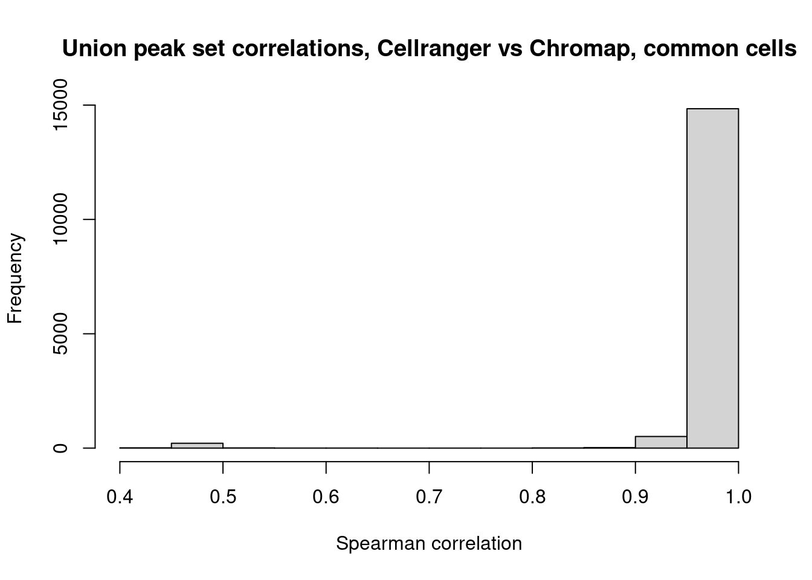

Last updated: 2022-09-14
Checks: 7 0
Knit directory: chromap_vs_cellranger_scATAC_exploration_10x/
This reproducible R Markdown analysis was created with workflowr (version 1.7.0). The Checks tab describes the reproducibility checks that were applied when the results were created. The Past versions tab lists the development history.
Great! Since the R Markdown file has been committed to the Git repository, you know the exact version of the code that produced these results.
Great job! The global environment was empty. Objects defined in the global environment can affect the analysis in your R Markdown file in unknown ways. For reproduciblity it’s best to always run the code in an empty environment.
The command set.seed(20220912) was run prior to running the code in the R Markdown file. Setting a seed ensures that any results that rely on randomness, e.g. subsampling or permutations, are reproducible.
Great job! Recording the operating system, R version, and package versions is critical for reproducibility.
Nice! There were no cached chunks for this analysis, so you can be confident that you successfully produced the results during this run.
Great job! Using relative paths to the files within your workflowr project makes it easier to run your code on other machines.
Great! You are using Git for version control. Tracking code development and connecting the code version to the results is critical for reproducibility.
The results in this page were generated with repository version 10fdcb0. See the Past versions tab to see a history of the changes made to the R Markdown and HTML files.
Note that you need to be careful to ensure that all relevant files for the analysis have been committed to Git prior to generating the results (you can use wflow_publish or wflow_git_commit). workflowr only checks the R Markdown file, but you know if there are other scripts or data files that it depends on. Below is the status of the Git repository when the results were generated:
working directory clean
Note that any generated files, e.g. HTML, png, CSS, etc., are not included in this status report because it is ok for generated content to have uncommitted changes.
These are the previous versions of the repository in which changes were made to the R Markdown (analysis/ComparisonPart2.Rmd) and HTML (docs/ComparisonPart2.html) files. If you’ve configured a remote Git repository (see ?wflow_git_remote), click on the hyperlinks in the table below to view the files as they were in that past version.
| File | Version | Author | Date | Message |
|---|---|---|---|---|
| Rmd | 10fdcb0 | jeremymsimon | 2022-09-14 | Initial commit |
library(tidyverse)── Attaching packages ─────────────────────────────────────── tidyverse 1.3.1 ──✔ ggplot2 3.3.6 ✔ purrr 0.3.4
✔ tibble 3.1.8 ✔ dplyr 1.0.9
✔ tidyr 1.2.0 ✔ stringr 1.4.0
✔ readr 2.1.2 ✔ forcats 0.5.1── Conflicts ────────────────────────────────────────── tidyverse_conflicts() ──
✖ dplyr::filter() masks stats::filter()
✖ dplyr::lag() masks stats::lag()library(GenomicRanges)Loading required package: stats4Loading required package: BiocGenerics
Attaching package: 'BiocGenerics'The following objects are masked from 'package:dplyr':
combine, intersect, setdiff, unionThe following objects are masked from 'package:stats':
IQR, mad, sd, var, xtabsThe following objects are masked from 'package:base':
anyDuplicated, append, as.data.frame, basename, cbind, colnames,
dirname, do.call, duplicated, eval, evalq, Filter, Find, get, grep,
grepl, intersect, is.unsorted, lapply, Map, mapply, match, mget,
order, paste, pmax, pmax.int, pmin, pmin.int, Position, rank,
rbind, Reduce, rownames, sapply, setdiff, sort, table, tapply,
union, unique, unsplit, which.max, which.minLoading required package: S4Vectors
Attaching package: 'S4Vectors'The following objects are masked from 'package:dplyr':
first, renameThe following object is masked from 'package:tidyr':
expandThe following objects are masked from 'package:base':
expand.grid, I, unnameLoading required package: IRanges
Attaching package: 'IRanges'The following objects are masked from 'package:dplyr':
collapse, desc, sliceThe following object is masked from 'package:purrr':
reduceLoading required package: GenomeInfoDblibrary(Seurat)Attaching SeuratObjectlibrary(Signac)
library(EnsDb.Hsapiens.v86)Loading required package: ensembldbLoading required package: GenomicFeaturesLoading required package: AnnotationDbiLoading required package: BiobaseWelcome to Bioconductor
Vignettes contain introductory material; view with
'browseVignettes()'. To cite Bioconductor, see
'citation("Biobase")', and for packages 'citation("pkgname")'.
Attaching package: 'AnnotationDbi'The following object is masked from 'package:dplyr':
selectLoading required package: AnnotationFilter
Attaching package: 'ensembldb'The following object is masked from 'package:dplyr':
filterThe following object is masked from 'package:stats':
filterlibrary(stringi)
library(plyranges)
Attaching package: 'plyranges'The following objects are masked from 'package:ensembldb':
filter, selectThe following object is masked from 'package:AnnotationDbi':
selectThe following object is masked from 'package:IRanges':
sliceThe following objects are masked from 'package:dplyr':
between, n, n_distinctThe following object is masked from 'package:stats':
filterHGMM.cr.peaks.all <- read.table("10x_HGMM_cellranger/outs/peaks.bed")
colnames(HGMM.cr.peaks.all) <- c("chr","start","end")
HGMM.cr.peaks.all.gr <- makeGRangesFromDataFrame(HGMM.cr.peaks.all)
HGMM.cr.peaks.all.gr <- keepStandardChromosomes(HGMM.cr.peaks.all.gr,pruning.mode="coarse")
PBMC.cr.peaks.all <- read.table("10x_PBMC_cellranger/outs/peaks.bed")
colnames(PBMC.cr.peaks.all) <- c("chr","start","end")
PBMC.cr.peaks.all.gr <- makeGRangesFromDataFrame(PBMC.cr.peaks.all)
PBMC.cr.peaks.all.gr <- keepStandardChromosomes(PBMC.cr.peaks.all.gr,pruning.mode="coarse")cr.union.all.gr <- union_ranges(HGMM.cr.peaks.all.gr,PBMC.cr.peaks.all.gr)cm.peaks.all <- read.table("10x_HGMM_PBMC_chromap_fragments_MACS_q01_unionPeaks.bed")
colnames(cm.peaks.all) <- c("chr","start","end")
cm.peaks.all.gr <- makeGRangesFromDataFrame(cm.peaks.all)
cm.peaks.all.gr <- keepStandardChromosomes(cm.peaks.all.gr,pruning.mode="coarse")cre <- read.table("cCRE_hg38.bed")
colnames(cre) <- c("chr","start","end")
cre.gr <- makeGRangesFromDataFrame(cre)
cre.gr <- keepStandardChromosomes(cre.gr,pruning.mode="coarse")all.union <- union_ranges(union_ranges(cr.union.all.gr,cm.peaks.all.gr), cre.gr)
# Filter out bad peaks based on length
peakwidths <- width(all.union)
all.union <- all.union[peakwidths < 10000 & peakwidths > 20]annotations <- GetGRangesFromEnsDb(ensdb = EnsDb.Hsapiens.v86)Warning in .Seqinfo.mergexy(x, y): The 2 combined objects have no sequence levels in common. (Use
suppressWarnings() to suppress this warning.)
Warning in .Seqinfo.mergexy(x, y): The 2 combined objects have no sequence levels in common. (Use
suppressWarnings() to suppress this warning.)
Warning in .Seqinfo.mergexy(x, y): The 2 combined objects have no sequence levels in common. (Use
suppressWarnings() to suppress this warning.)
Warning in .Seqinfo.mergexy(x, y): The 2 combined objects have no sequence levels in common. (Use
suppressWarnings() to suppress this warning.)
Warning in .Seqinfo.mergexy(x, y): The 2 combined objects have no sequence levels in common. (Use
suppressWarnings() to suppress this warning.)
Warning in .Seqinfo.mergexy(x, y): The 2 combined objects have no sequence levels in common. (Use
suppressWarnings() to suppress this warning.)
Warning in .Seqinfo.mergexy(x, y): The 2 combined objects have no sequence levels in common. (Use
suppressWarnings() to suppress this warning.)
Warning in .Seqinfo.mergexy(x, y): The 2 combined objects have no sequence levels in common. (Use
suppressWarnings() to suppress this warning.)
Warning in .Seqinfo.mergexy(x, y): The 2 combined objects have no sequence levels in common. (Use
suppressWarnings() to suppress this warning.)
Warning in .Seqinfo.mergexy(x, y): The 2 combined objects have no sequence levels in common. (Use
suppressWarnings() to suppress this warning.)
Warning in .Seqinfo.mergexy(x, y): The 2 combined objects have no sequence levels in common. (Use
suppressWarnings() to suppress this warning.)
Warning in .Seqinfo.mergexy(x, y): The 2 combined objects have no sequence levels in common. (Use
suppressWarnings() to suppress this warning.)
Warning in .Seqinfo.mergexy(x, y): The 2 combined objects have no sequence levels in common. (Use
suppressWarnings() to suppress this warning.)
Warning in .Seqinfo.mergexy(x, y): The 2 combined objects have no sequence levels in common. (Use
suppressWarnings() to suppress this warning.)
Warning in .Seqinfo.mergexy(x, y): The 2 combined objects have no sequence levels in common. (Use
suppressWarnings() to suppress this warning.)
Warning in .Seqinfo.mergexy(x, y): The 2 combined objects have no sequence levels in common. (Use
suppressWarnings() to suppress this warning.)
Warning in .Seqinfo.mergexy(x, y): The 2 combined objects have no sequence levels in common. (Use
suppressWarnings() to suppress this warning.)
Warning in .Seqinfo.mergexy(x, y): The 2 combined objects have no sequence levels in common. (Use
suppressWarnings() to suppress this warning.)
Warning in .Seqinfo.mergexy(x, y): The 2 combined objects have no sequence levels in common. (Use
suppressWarnings() to suppress this warning.)
Warning in .Seqinfo.mergexy(x, y): The 2 combined objects have no sequence levels in common. (Use
suppressWarnings() to suppress this warning.)
Warning in .Seqinfo.mergexy(x, y): The 2 combined objects have no sequence levels in common. (Use
suppressWarnings() to suppress this warning.)
Warning in .Seqinfo.mergexy(x, y): The 2 combined objects have no sequence levels in common. (Use
suppressWarnings() to suppress this warning.)
Warning in .Seqinfo.mergexy(x, y): The 2 combined objects have no sequence levels in common. (Use
suppressWarnings() to suppress this warning.)
Warning in .Seqinfo.mergexy(x, y): The 2 combined objects have no sequence levels in common. (Use
suppressWarnings() to suppress this warning.)seqlevelsStyle(annotations) <- 'UCSC'Warning in sparseMatrix(i = indices[] + 1, p = indptr[], x = as.numeric(x =
counts[]), : 'giveCsparse' has been deprecated; setting 'repr = "T"' for youComputing hashWarning in CreateSeuratObject.Assay(counts = PBMC_cr_chrom_assay, assay =
"peaks", : Some cells in meta.data not present in provided counts matrix.Warning: Keys should be one or more alphanumeric characters followed by an
underscore, setting key from peaks to peaks_PBMC_cr_counts <- Read10X_h5(filename = "10x_PBMC_cellranger/outs/filtered_peak_bc_matrix.h5")
PBMC_cr_metadata <- read.csv(
file = "10x_PBMC_cellranger/outs/singlecell.csv",
header = TRUE,
row.names = 1
)
PBMC_cr_chrom_assay <- CreateChromatinAssay(
counts = PBMC_cr_counts,
sep = c(":", "-"),
genome = 'hg38',
fragments = '10x_PBMC_cellranger/outs/fragments.tsv.gz',
min.cells = 10,
min.features = 200
)
PBMC_cr_seurat <- CreateSeuratObject(
counts = PBMC_cr_chrom_assay,
assay = "peaks",
meta.data = PBMC_cr_metadata
)Annotation(PBMC_cr_seurat) <- annotations
PBMC_cr_seurat$Sample <- "PBMC"
PBMC_cr_seurat <- RenameCells(PBMC_cr_seurat, add.cell.id = "PBMC")Warning in sparseMatrix(i = indices[] + 1, p = indptr[], x = as.numeric(x =
counts[]), : 'giveCsparse' has been deprecated; setting 'repr = "T"' for youComputing hashWarning in CreateSeuratObject.Assay(counts = HGMM_cr_chrom_assay, assay =
"peaks", : Some cells in meta.data not present in provided counts matrix.Warning: Keys should be one or more alphanumeric characters followed by an
underscore, setting key from peaks to peaks_HGMM_cr_counts <- Read10X_h5(filename = "10x_HGMM_cellranger/outs/filtered_peak_bc_matrix.h5")
HGMM_cr_metadata <- read.csv(
file = "10x_HGMM_cellranger/outs/singlecell.csv",
header = TRUE,
row.names = 1
)
HGMM_cr_chrom_assay <- CreateChromatinAssay(
counts = HGMM_cr_counts,
sep = c(":", "-"),
genome = 'hg38',
fragments = '10x_HGMM_cellranger/outs/fragments.tsv.gz',
min.cells = 10,
min.features = 200
)
HGMM_cr_seurat <- CreateSeuratObject(
counts = HGMM_cr_chrom_assay,
assay = "peaks",
meta.data = HGMM_cr_metadata
)Annotation(HGMM_cr_seurat) <- annotations
HGMM_cr_seurat$Sample <- "HGMM"
HGMM_cr_seurat <- RenameCells(HGMM_cr_seurat, add.cell.id = "HGMM")HGMM.counts <- FeatureMatrix(
fragments = Fragments(HGMM_cr_seurat),
features = all.union,
cells = colnames(HGMM_cr_seurat)
)Extracting reads overlapping genomic regionsPBMC.counts <- FeatureMatrix(
fragments = Fragments(PBMC_cr_seurat),
features = all.union,
cells = colnames(PBMC_cr_seurat)
)Extracting reads overlapping genomic regionsHGMM_assay <- CreateChromatinAssay(HGMM.counts, fragments = Fragments(HGMM_cr_seurat))
HGMM_seurat <- CreateSeuratObject(HGMM_assay, assay = "ATAC", meta.data=as.data.frame(HGMM_cr_seurat@meta.data))Warning: Keys should be one or more alphanumeric characters followed by an
underscore, setting key from atac to atac_HGMM_seurat$Sample <- "HGMM"
PBMC_assay <- CreateChromatinAssay(PBMC.counts, fragments = Fragments(PBMC_cr_seurat))
PBMC_seurat <- CreateSeuratObject(PBMC_assay, assay = "ATAC", meta.data=as.data.frame(PBMC_cr_seurat@meta.data))Warning: Keys should be one or more alphanumeric characters followed by an
underscore, setting key from atac to atac_PBMC_seurat$Sample <- "PBMC"
cellranger.combined <- merge(HGMM_seurat, y = PBMC_seurat)Computing hashExtracting reads overlapping genomic regionsWarning: Keys should be one or more alphanumeric characters followed by an
underscore, setting key from peaks to peaks_PBMC_10x_path <- "10x_PBMC_chromap_fragments.tsv.gz"
PBMC_10x_cells <- read_tsv(PBMC_10x_path,col_names=c("chr","start","stop","cell","support"),col_types=c("-","-","-","-","c"),col_select="cell") %>% pull(cell) %>% unique()
names(x = PBMC_10x_cells) <- paste0("PBMC_", PBMC_10x_cells)
PBMC_10x_frags <- CreateFragmentObject(path = PBMC_10x_path, cells = PBMC_10x_cells, max.lines=NULL)
PBMC_10x_mat <- FeatureMatrix(
fragments = PBMC_10x_frags,
features = all.union,
process_n = 20000,
sep = c("-", "-"),
verbose = TRUE
)
PBMC_10x_assay <- CreateChromatinAssay(PBMC_10x_mat, fragments = PBMC_10x_frags, genome = 'hg38', min.features = 500)
PBMC_10x_seurat <- CreateSeuratObject(PBMC_10x_assay, assay = "peaks")
PBMC_10x_seurat$Sample <- "PBMC"Computing hashExtracting reads overlapping genomic regionsWarning: Keys should be one or more alphanumeric characters followed by an
underscore, setting key from peaks to peaks_HGMM_10x_path <- "10x_HGMM_chromap_fragments.tsv.gz"
HGMM_10x_cells <- read_tsv(HGMM_10x_path,col_names=c("chr","start","stop","cell","support"),col_types=c("-","-","-","-","c"),col_select="cell") %>% pull(cell) %>% unique()
names(x = HGMM_10x_cells) <- paste0("HGMM_", HGMM_10x_cells)
HGMM_10x_frags <- CreateFragmentObject(path = HGMM_10x_path, cells = HGMM_10x_cells, max.lines=NULL)
HGMM_10x_mat <- FeatureMatrix(
fragments = HGMM_10x_frags,
features = all.union,
process_n = 20000,
sep = c("-", "-"),
verbose = TRUE
)
HGMM_10x_assay <- CreateChromatinAssay(HGMM_10x_mat, fragments = HGMM_10x_frags, genome = 'hg38', min.features = 500)
HGMM_10x_seurat <- CreateSeuratObject(HGMM_10x_assay, assay = "peaks")
HGMM_10x_seurat$Sample <- "HGMM"chromap.combined <- merge(HGMM_10x_seurat, y = PBMC_10x_seurat)cr.names <- colnames(cellranger.combined)
cr.newnames <- str_replace_all(cr.names,"-1","")
cellranger.combined <- RenameCells(cellranger.combined,new.names = cr.newnames)cm.names <- colnames(chromap.combined)
snames <- str_replace_all(cm.names,"_.+","")
seq <- str_replace_all(cm.names,".+_(.+)","\\1")
rc <- stringi::stri_reverse(chartr(old="ATGC", new="TACG", seq))
cm.newnames <- paste0(snames,"_",rc)
chromap.combined <- RenameCells(chromap.combined, new.names = cm.newnames)intercells <- intersect(colnames(cellranger.combined),colnames(chromap.combined))
intergenes <- intersect(rownames(cellranger.combined),rownames(chromap.combined))
cr.subset <- cellranger.combined@assays$ATAC@counts[intergenes,intercells]
cm.subset <- chromap.combined@assays$peaks@counts[intergenes,intercells]Performs slowly with a for-loop, however we do not want to densify our sparse matrices here
cors <- rep(NA,length(intercells))
for(i in 1:length(intercells)) {
cors[i] <- cor(as.numeric(cr.subset[,i]), as.numeric(cm.subset[,i]),method="spearman")
}hist(cors,xlab="Spearman correlation",main="Union peak set correlations, Cellranger vs Chromap, common cells")
sessionInfo()R version 4.1.0 (2021-05-18)
Platform: x86_64-pc-linux-gnu (64-bit)
Running under: Red Hat Enterprise Linux 8.5 (Ootpa)
Matrix products: default
BLAS/LAPACK: /nas/longleaf/rhel8/apps/r/4.1.0/lib/libopenblas_haswellp-r0.3.5.so
locale:
[1] LC_CTYPE=en_US.UTF-8 LC_NUMERIC=C
[3] LC_TIME=en_US.UTF-8 LC_COLLATE=en_US.UTF-8
[5] LC_MONETARY=en_US.UTF-8 LC_MESSAGES=en_US.UTF-8
[7] LC_PAPER=en_US.UTF-8 LC_NAME=C
[9] LC_ADDRESS=C LC_TELEPHONE=C
[11] LC_MEASUREMENT=en_US.UTF-8 LC_IDENTIFICATION=C
attached base packages:
[1] stats4 stats graphics grDevices utils datasets methods
[8] base
other attached packages:
[1] plyranges_1.14.0 stringi_1.7.6
[3] EnsDb.Hsapiens.v86_2.99.0 ensembldb_2.18.3
[5] AnnotationFilter_1.18.0 GenomicFeatures_1.46.5
[7] AnnotationDbi_1.56.2 Biobase_2.54.0
[9] Signac_1.7.0.9003 SeuratObject_4.0.4
[11] Seurat_4.1.0 GenomicRanges_1.46.1
[13] GenomeInfoDb_1.30.1 IRanges_2.28.0
[15] S4Vectors_0.32.4 BiocGenerics_0.40.0
[17] forcats_0.5.1 stringr_1.4.0
[19] dplyr_1.0.9 purrr_0.3.4
[21] readr_2.1.2 tidyr_1.2.0
[23] tibble_3.1.8 ggplot2_3.3.6
[25] tidyverse_1.3.1 workflowr_1.7.0
loaded via a namespace (and not attached):
[1] rappdirs_0.3.3 rtracklayer_1.54.0
[3] scattermore_0.8 bit64_4.0.5
[5] knitr_1.37 irlba_2.3.5
[7] DelayedArray_0.20.0 data.table_1.14.2
[9] rpart_4.1.16 KEGGREST_1.34.0
[11] RCurl_1.98-1.6 generics_0.1.2
[13] callr_3.7.0 cowplot_1.1.1
[15] RSQLite_2.2.10 RANN_2.6.1
[17] future_1.24.0 bit_4.0.4
[19] tzdb_0.2.0 spatstat.data_2.1-2
[21] xml2_1.3.3 lubridate_1.8.0
[23] httpuv_1.6.5 SummarizedExperiment_1.24.0
[25] assertthat_0.2.1 xfun_0.30
[27] hms_1.1.1 jquerylib_0.1.4
[29] evaluate_0.15 promises_1.2.0.1
[31] fansi_1.0.3 restfulr_0.0.13
[33] progress_1.2.2 dbplyr_2.1.1
[35] readxl_1.3.1 igraph_1.3.3
[37] DBI_1.1.2 htmlwidgets_1.5.4
[39] spatstat.geom_2.3-2 ellipsis_0.3.2
[41] backports_1.4.1 biomaRt_2.50.3
[43] deldir_1.0-6 MatrixGenerics_1.6.0
[45] vctrs_0.4.1 ROCR_1.0-11
[47] abind_1.4-5 cachem_1.0.6
[49] withr_2.5.0 BSgenome_1.62.0
[51] checkmate_2.0.0 vroom_1.5.7
[53] sctransform_0.3.3 GenomicAlignments_1.30.0
[55] prettyunits_1.1.1 goftest_1.2-3
[57] cluster_2.1.2 lazyeval_0.2.2
[59] crayon_1.5.1 hdf5r_1.3.5
[61] pkgconfig_2.0.3 nlme_3.1-155
[63] ProtGenerics_1.26.0 nnet_7.3-17
[65] rlang_1.0.4 globals_0.14.0
[67] lifecycle_1.0.1 miniUI_0.1.1.1
[69] filelock_1.0.2 BiocFileCache_2.2.1
[71] modelr_0.1.8 dichromat_2.0-0
[73] cellranger_1.1.0 rprojroot_2.0.2
[75] polyclip_1.10-0 matrixStats_0.62.0
[77] lmtest_0.9-40 Matrix_1.4-0
[79] zoo_1.8-9 reprex_2.0.1
[81] base64enc_0.1-3 whisker_0.4
[83] ggridges_0.5.3 processx_3.5.2
[85] png_0.1-7 viridisLite_0.4.0
[87] rjson_0.2.21 bitops_1.0-7
[89] getPass_0.2-2 KernSmooth_2.23-20
[91] Biostrings_2.62.0 blob_1.2.2
[93] parallelly_1.30.0 spatstat.random_2.1-0
[95] jpeg_0.1-9 scales_1.2.0
[97] memoise_2.0.1 magrittr_2.0.2
[99] plyr_1.8.7 ica_1.0-2
[101] zlibbioc_1.40.0 compiler_4.1.0
[103] BiocIO_1.4.0 RColorBrewer_1.1-3
[105] fitdistrplus_1.1-6 Rsamtools_2.10.0
[107] cli_3.3.0 XVector_0.34.0
[109] listenv_0.8.0 patchwork_1.1.1
[111] pbapply_1.5-0 ps_1.6.0
[113] htmlTable_2.4.0 Formula_1.2-4
[115] MASS_7.3-55 mgcv_1.8-40
[117] tidyselect_1.1.2 highr_0.9
[119] yaml_2.3.5 latticeExtra_0.6-29
[121] ggrepel_0.9.1 grid_4.1.0
[123] sass_0.4.0 VariantAnnotation_1.40.0
[125] fastmatch_1.1-3 tools_4.1.0
[127] future.apply_1.8.1 parallel_4.1.0
[129] rstudioapi_0.13 foreign_0.8-82
[131] git2r_0.30.1 gridExtra_2.3
[133] Rtsne_0.15 digest_0.6.29
[135] shiny_1.7.1 Rcpp_1.0.8.3
[137] broom_1.0.0 later_1.3.0
[139] RcppAnnoy_0.0.19 httr_1.4.2
[141] biovizBase_1.42.0 colorspace_2.0-3
[143] rvest_1.0.2 XML_3.99-0.9
[145] fs_1.5.2 tensor_1.5
[147] reticulate_1.25 splines_4.1.0
[149] uwot_0.1.11 RcppRoll_0.3.0
[151] spatstat.utils_2.3-0 plotly_4.10.0
[153] xtable_1.8-4 jsonlite_1.8.0
[155] R6_2.5.1 Hmisc_4.6-0
[157] pillar_1.7.0 htmltools_0.5.2
[159] mime_0.12 glue_1.6.2
[161] fastmap_1.1.0 BiocParallel_1.28.3
[163] codetools_0.2-18 utf8_1.2.2
[165] lattice_0.20-45 bslib_0.3.1
[167] spatstat.sparse_2.1-0 curl_4.3.2
[169] leiden_0.3.9 survival_3.2-13
[171] rmarkdown_2.12 munsell_0.5.0
[173] GenomeInfoDbData_1.2.7 haven_2.4.3
[175] reshape2_1.4.4 gtable_0.3.0
[177] spatstat.core_2.4-0